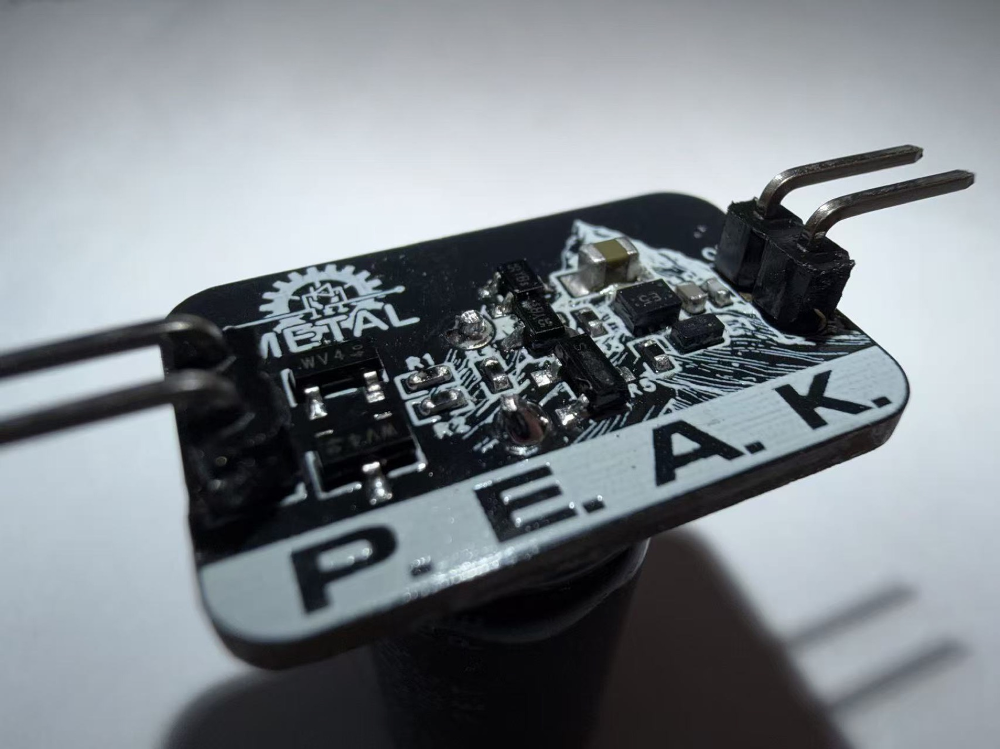

Independent research · METAL Lab · 2025 to present
PEAK Self-Powered TinyML Sensor Node
A battery-free embedded sensing platform combining custom power hardware, firmware, on-device inference, and wireless communication.
My responsibility: sole developer of the hardware, PCB, embedded firmware, TinyML deployment, BLE reporting, experiment software, and manuscript preparation.

- 172 nA
- Measured power-board quiescent current
- Sole developer
- Hardware, embedded software, experiments, and paper
- Custom PCB
- Schematic, layout, assembly, and bring-up
- Embedded TinyML
- Firmware, inference, and BLE integration
Independent system development
I developed the complete research prototype across custom hardware, embedded software, on-device inference, and experiment tooling.
- Designed the schematic and PCB, completed assembly and board bring-up, and iterated the hardware through measurement.
- Implemented embedded acquisition, signal processing, task control, and TensorFlow Lite Micro inference.
- Integrated BLE reporting and experiment software for repeatable system evaluation.
Research status
PEAK investigates energy-aware sensing and inference on battery-free embedded hardware. The prototype reaches 172 nA power-board quiescent current while integrating energy harvesting, embedded inference, and BLE reporting in one independently developed platform. The manuscript and full evaluation are in progress.